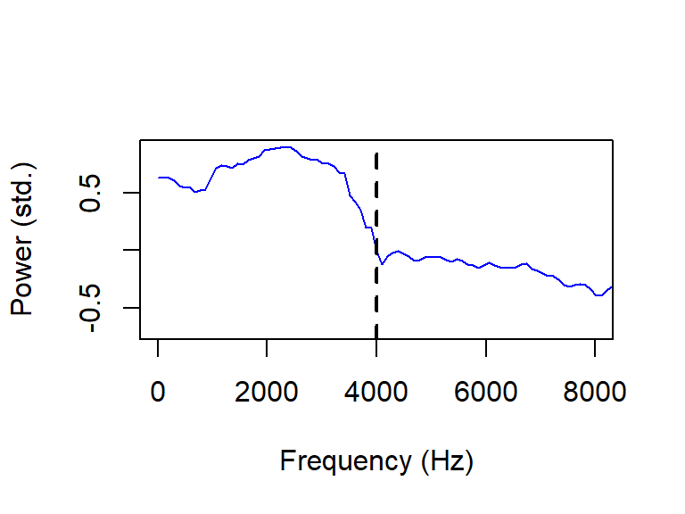
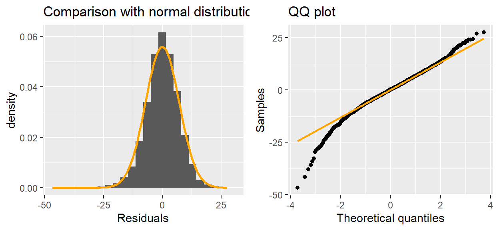

library(tidyverse)
library(patchwork)
library(eurostat)
geodata <- get_eurostat_geospatial(resolution = '1', nuts_level = 3)The /t/ release in Jutland Danish. Decomposing the spectrum with functional PCA
Rasmus Puggaard-Rode ![]()
Abstract
This study concerns variation in the realization of /t/ in Danish. /t/ is prominently affricated in Modern Standard Danish, but affrication is known to have been missing in some of the regional varieties that used to be spoken in Jutland. It remains unclear exactly which varieties lacked affrication. Due to relatively recent major changes in language policy and mobility, the traditional Danish dialect landscape has undergone rapid levelling, so we explore this problem using a large corpus of recordings of elderly speakers from the 1970s. We propose using the functional extension of principal component analysis to decompose the sources of spectral variance in stop release midpoints, and use the results as a proxy for determining affrication status. We find that /t/ affrication was limited to parts of eastern Jutland, perhaps due to early adaptation of the feature in some of the area’s largest cities.
What’s this?
This is a so-called ‘callout block’. You’ll find them spread throughout the text. The text is otherwise identical to the version published in the ICPhS proceedings, except it uses the colorful versions of plots that were used in my ICPhS presentation. The callout blocks mostly contain software-specific technical details about how the analysis was implemented, how plots were generated etc in the R language – generally along with explanations in prose about what the individual commands do and how they work. Sometimes they just contain additional technical details. In several cases they contain plots and details that were part of the presentation at ICPhS, but were not part of the proceedings paper. Instead of placing all this in a repository separate from the manuscript, this is an attempt to incorporate it directly into the paper, so that looking up technical details is as easy and simple as possible. This particular paper has a lot of technical detail in very little space, making it potentially very handy to be able to look up the implementation details.
The main analysis for this paper was done in early 2022. The analysis was included in my dissertation (Puggaard-Rode 2023), and analysis data and code are already published (see Puggaard-Rode 2022a). The analysis code presented here is substantially the same, but my R skills have significantly improved since, so the code has been updated or rewritten for improved legibility. If you are interested in reproducing the specific grayscale plots from the proceedings paper, please consult Puggaard-Rode (2022a).
1 Introduction
The aims of this study are twofold: 1) to explore the geographical distribution of (missing) /t/ affrication in traditional varieties of Jutland Danish (see Figure 1), and 2) to explore the use of functional principal component analysis (FPCA, Gubian, Torreira & Boves 2015) for compressing the information in speech spectra into a small number of easily interpretable discrete variables.
Generating the map in Figure 1
Figure 1 shows Denmark and its immediate neighbors, and colors in some important landmarks. In order to make this map natively in R, we load in the packages tidyverse (which will be used for data manipulation and plotting throughout the paper), patchwork, and eurostat. eurostat provides wrappers for loading Eurostat data into R, including e.g. coordinates for select countries with the get_eurostat_geospatial() function as below. I set resolution = '1' to get the highest possible resolution. nuts_level refers to Eurostat’s NUTS level (nomenclature of territorial units for statistics, and I agree – that’s not a very satisfying abbreviation). The nuts_level determines the granularity of the regions that maps are divided into. 3 is the right granularity here – 2 would give us the official regions of Denmark, which would not allow us to easily separate Jutland from the rest of the country.
Coordinates for specific countries can then be accessed by filtering the resulting geodata object by the country codes that are stored in geodata$CNTR_CODE. I’ll grab the data for Denmark, Germany, and Sweden, so I can show where Denmark is located relative to the bordering countries. Each of these filtered objects will include coordinate data sorted into regions by NUTS unit. I further split the Danish coordinates into the NUTS units belonging to Jutland and those not belonging to Jutland.
geodataDK <- geodata[geodata$CNTR_CODE=='DK',]
geodataDE <- geodata[geodata$CNTR_CODE=='DE',]
geodataSE <- geodata[geodata$CNTR_CODE=='SE',]
jut_areas <- c('Sydjylland', 'Vestjylland', 'Nordjylland', 'Østjylland')
jutland <- geodataDK[geodataDK$NUTS_NAME %in% jut_areas,]
restofDK <- geodataDK[!geodataDK$NUTS_NAME %in% jut_areas,]The following bit of code then generates the map. The map bits are added individually with geom_sf(), making Jutland yellow, and the rest of Denmark light green, and the other countries light grey. Text annotations are added with annotate(), putting in proper coordinates manually, and xlim() and ylim() are set to include only Denmark (excluding the islands of Bornholm and Christiansø, which are not of interest in this study and which are quite far removed from the rest of the country). theme() options are used to remove most of the regular ggplot() junk which we don’t really need here, and also to turn the background light blue to make it clear what is and what isn’t ocean.
mapDK <- ggplot() +
geom_sf(data=jutland, fill='yellow') +
geom_sf(data=restofDK, fill='lightgreen') +
geom_sf(data=geodataDE, fill='lightgrey') +
geom_sf(data=geodataSE, fill='lightgrey') +
annotate(geom='text', x=8.7, y=57.5, label='Jutland\nDanish', color='orange',
fontface='bold', size=6) +
annotate(geom='text', x=11.7, y=56.4, label='Insular\nDanish',
color='darkgreen', fontface='bold', size=6) +
xlim(8, 13) +
ylim(54.7, 58) +
theme_bw() +
theme(panel.background=element_rect(fill='lightblue'),
panel.border=element_blank(),
panel.grid.major=element_blank(),
panel.grid.minor=element_blank(),
axis.text.y=element_blank(),
axis.text.x=element_blank(),
axis.title.y=element_blank(),
axis.title.x=element_blank(),
axis.ticks=element_blank())Code
mapDKIn Modern Standard Danish (MSD), /p t k/ are voiceless aspirated, and /t/ in particular is prominently affricated (Jespersen 1899; Fischer-Jørgensen 1954; Puggaard-Rode 2022b). Until relatively recently, the majority of the Danish speech community spoke traditional dialects (Kristiansen 2003), but in the past century, rampant standardization has largely led to the levelling of these varieties (Pedersen 2003). An overt feature of some Jutlandic varieties was the use of a variant of /t/ without salient affrication, which is known colloquially as tørt t ‘dry t’ (Puggaard 2021). There is no consensus about which Jutlandic varieties lacked affrication. Sources have variously claimed that it was missing from all Jutlandic varieties (Brink & Lund 1975), Northern Jutlandic (Petersen 2009), Western Jutlandic (Petersen et al. 2021), or all varieties except Eastern Jutlandic (Heger 1981). We explore this mystery using a large legacy corpus of sociolinguistic interviews which was explicitly recorded to document the traditional language and culture of rural Denmark (Andersen 1981; Goldshtein & Puggaard 2019). These recordings (particularly the ones from Jutland) largely preserve a stage of language variation unaffected by the recent wave of standardization.
The acoustics of alveolar frication and aspiration are well-understood. In alveolar frication, a jet of air impinges on a hard surface (the upper front teeth) immediately in front of the coronal constriction, resulting in noise in a broad range of high frequencies (mainly above 4 kHz) (Stevens 1993). In aspiration, lower frequency turbulence noise in a narrower frequency range (mainly below 1 kHz) is generated at and near the glottis (Stevens 1998). This noise is filtered through the supraglottal cavity, where the resonance frequencies of the following vowel significantly affect the resulting noise. Analyzing how these spectral characteristics vary regionally is not at all straightforward.
Spectral moments are commonly used to decompose spectra generated from aperiodic portions of speech. The spectral mean, or center of gravity (COG) (Forrest et al. 1988), is a particularly popular measure. Since spectra rarely resemble Gaussian distributions, the mean frequency alone is not very informative with respect to overall shape; furthermore, studies have found conflicting evidence about which spectral moments (if any) can be used to consistently determine noise sources (Stoel-Gammon, Williams & Buder 1994; Shadle & Mair 1996). Several other measures have been proposed for decomposing aperiodic spectra (e.g. Jongman, Wayland & Wong 2000; Bunnell, Polikoff & McNicholas 2004; Koenig et al. 2013), but none have been as influential as COG.
For the reasons outlined above, we do not use spectral moments here. Instead, we adopt FPCA as an alternative method. FPCA is used to determine the main sources of variance in curves without imposing predetermined shapes. This makes it particularly suitable for exploratory work. Each resulting principal component PCi corresponds to a source of variance relative to the average spectral shape, and each individual spectrum gets a score \(s_i\) for each PC indicating how well it corresponds to this source of variance. These scores can then be fitted to conventional statistical models; here, we fit PC scores to spatial generalized additive mixed models (GAMMs, Wieling, Nerbonne & Baayen 2011) in order to test whether any of the variance in spectral shape is geographically determined. These models also include a range of phonetic contextual predictors. The influence of phonetic contextual predictors largely pattern as predicted, which we take as an indication that FPCA is indeed a suitable tool for decomposing spectra. FPCA has previously been used to analyze various time-varying phonetic measures, such as F0 and formants (Gubian, Boves & Cangemi 2011; Gubian, Torreira & Boves 2015); to our knowledge, it has not previously been used to analyze speech spectra.
2 Methods and materials
2.1 Recordings
Our materials consist of sociolinguistic interviews with elderly speakers of traditional regional varieties recorded between 1971–1976 (Dialektsamlingen 1971–1976; Goldshtein & Puggaard 2019). Interviews were conducted with informants in 230 parishes in Jutland, of which 213 were used in this study. 23% of the informants are women. Informants’ median year of birth is 1896 (range 1871–1927). The geographical distribution of informants can be seen in Figure 2 (which shows the location of Djursland for reference.) In spite of the large scope of these recordings, they have not been used for systematic research until very recently (Goldshtein & Ahlgren 2021; Puggaard 2021).
Loading and preprocessing data
Our analysis data is presently spread across four semicolon-separated CSV files, which we’ll load in with read.csv().
coordinates <- read.csv('data/dialect_coordinates.csv', sep=';')
dia_polygon <- read.csv('data/polygons_dialectareas.csv', sep=';')
participant_info <- read.csv('data/participant_info.csv', sep=';')
affric <- read.csv('data/affric.csv', sep=';')Let’s have a quick look at each of these.
glimpse(coordinates)Rows: 213
Columns: 3
$ parish <chr> "Agerskov", "Als", "Ansager", "Arnborg", "Arup", "Asdal", "Asse…
$ lat <dbl> 9.129243, 10.287372, 8.755025, 8.990251, 8.922354, 10.028146, 1…
$ long <dbl> 55.12875, 56.75543, 55.70342, 56.01439, 57.00574, 57.54936, 54.…coordinates contains geographical coordinates for each of the parishes included in the study (each parish corresponds to one speaker).
glimpse(dia_polygon)Rows: 3,192
Columns: 4
$ lat <dbl> 9.016305, 9.012300, 9.000627, 8.988782, 8.982946, 8.971960, 8.…
$ long <dbl> 57.15828, 57.15622, 57.15603, 57.15687, 57.15836, 57.15668, 57…
$ order <int> 1, 2, 3, 4, 5, 6, 7, 8, 9, 10, 11, 12, 13, 14, 15, 16, 17, 18,…
$ dialect <chr> "NV", "NV", "NV", "NV", "NV", "NV", "NV", "NV", "NV", "NV", "N…dia_polygon contains coordinates tracing the traditional dialect areas of Jutland as defined by Skautrup et al. (1970–). These can be plotted in ggplot2 with geom_polygon(). The dialect areas are not actually used in this study, but I’ll use these polygons for all maps below.
glimpse(participant_info)Rows: 213
Columns: 9
$ X <int> 1, 2, 3, 4, 5, 6, 7, 8, 9, 10, 11, 12, 13, 14, 15, 16, 17, 1…
$ parish <chr> "Åbenrå", "Agerskov", "Ajstrup", "Als", "Ansager", "Arnborg"…
$ parishno <int> 3191, 3074, 1468, 1541, 2616, 2501, 1568, 1323, 1229, 1211, …
$ tape_id <int> 943, 395, 979, 353, 1210, 306, 1249, 1055, 461, 988, 39, 303…
$ birthyear <int> 1906, 1883, 1904, 1893, 1895, 1914, 1902, 1904, 1886, 1927, …
$ gender <chr> "male", "male", "male", "male", "male", "male", "male", "mal…
$ year <int> 1974, 1972, 1974, 1972, 1975, 1972, 1975, 1975, 1973, 1974, …
$ dialect <chr> "Søn", "Søn", "N", "NØ", "Sy", "MV", "NØ", "NV", "N", "N", "…
$ rec_age <int> 68, 89, 70, 79, 80, 58, 73, 71, 87, 47, 78, 81, 79, 69, 74, …participant_info contains informant metadata. I’ll briefly go over columns that are not self-explanatory.
Xis simply an identifier containing row numbers.parishis the name of the parish where the informant is from,parishnois a numeric identifier for each parish based on Skjelborg (1967).tape_idis an identifier for each original tape. It can be used to locate the recording in the Royal Danish Library’s dialect collection. The URL for a recording is:dansklyd.statsbiblioteket.dk/lydoptagelse/?eid=Dialekt_P + id; i.e. as can be seenparticipant_info, thetape_idfor the recording from Agerskov is 395, so this recording can be found at dansklyd.statsbiblioteket.dk/lydoptagelse/?eid=Dialekt_P395.birthyearis the birth year of the speaker (if available),yearis the year of recording, andrec_ageis the age of the speaker at the time of recording. These are not used in the analysis.dialectis the traditional dialect area as defined by Skautrup et al. (1970–) which the speaker belongs to.
glimpse(affric)Rows: 10,447
Columns: 11
$ parish <chr> "Agerskov", "Agerskov", "Agerskov", "Agerskov", "Agerskov", "…
$ token <chr> "tæ2", "ty1", "pø2", "te1", "kø1", "te1", "ku1", "koe1", "kø2…
$ cog <int> 4305, 4157, 1883, 5492, 2713, 6077, 1966, 2959, 2679, 2180, 5…
$ vot <dbl> 63.3, 46.5, 34.4, 50.3, 66.2, 55.9, 57.6, 61.4, 69.6, 28.2, 8…
$ pal <chr> "negpal", "negpal", "negpal", "negpal", "negpal", "negpal", "…
$ height <chr> "mid", "high", "mid", "high", "mid", "high", "high", "low", "…
$ backness <chr> "front", "front", "front", "front", "front", "front", "back",…
$ round <chr> "negrd", "rd", "rd", "negrd", "rd", "negrd", "rd", "negrd", "…
$ stop <chr> "t", "t", "p", "t", "k", "t", "k", "k", "k", "p", "t", "k", "…
$ stress <chr> "str", "negstr", "str", "negstr", "negstr", "negstr", "negstr…
$ .obs <int> 1, 2, 3, 4, 5, 6, 7, 8, 9, 10, 11, 12, 13, 14, 15, 16, 17, 18…affric contains information about each token used for the analysis. Note that this data frame has 10,447 and includes not just tokens of /t/ but also tokens of /p k/. The data frame was used for a larger equivalent study of spectral characteristics of stops in Jutland Danish, which can be found in Chapter 6 of Puggaard-Rode (2023). I’ll briefly go over columns that are not self-explanatory.
tokenis a makeshift phonetic transcription of the syllable where the token comes from. These were used to automatically generate the information in the columns mentioned below, following a procedure outlined in the DataverseNL repository accompanying Puggaard (2021).cogcontains centre of gravity estimates from Praat. They are not used here.votcontains the voice onset time of each stop token.pal,height,round,stresscorrespond to the categorical variables palatalization, height, roundness, stress discussed below.backnesscontains information about three levels of backness in vowels, which I’ll collapse to two levels below. The values for these are mostly formulated in terms of features – e.g.negpalmeans “no palatalization” andpalmeans “palatalization”..obsis a numeric identifier for each token.
I’ll make a data frame df by joining the data frames affric, participant_info, and coordinates.
df <- left_join(affric, participant_info) %>%
left_join(coordinates)It was clear from the glimpse()s above that several columns are strings when they should be factors, so we’ll convert those. We’ll also collapse the backness variable into two levels instead of the current three levels.
for (col in c(
'height', 'round', 'pal', 'stress', 'gender', 'parish', 'backness')){
df[[col]] <- as.factor(df[[col]])
}
df <- df %>%
mutate(bkn2l = case_when(
backness == 'front' | backness == 'central' ~ 'nbk',
TRUE ~ 'bk'
)) %>%
mutate(bkn2l = as.factor(bkn2l))
Generating the map in Figure 2
Figure 2 is generated in ggplot2 by plotting green dots for each of the coordinates in the coordinates data frame on top of the outlines of Jutland dialect areas in the dia_polygon data frame. I also use geom_segment() and annotate() to indicate the location of Djursland on the map. theme() is used to remove all the regular ggplot junk so we just have a blank background and no axes.
locs_map <- ggplot(coordinates) +
aes(x=lat, y=long) +
geom_polygon(data=dia_polygon, aes(x=lat, y=long, group=dialect),
fill=NA, color='grey', lwd=0.6) +
coord_fixed(1.7) +
geom_point(size=2.5, alpha=0.5, col='darkgreen') +
geom_segment(x=10.4, y=55.6, xend=10.7, yend=56.1,
arrow=arrow(length=unit(0.05, 'npc')), linewidth=1.2,
lineend='butt', linejoin='round', col='darkgreen') +
annotate('text', label='Djursland', x=10.4, y=55.5, col='darkgreen') +
theme(panel.border = element_blank(),
panel.background = element_rect(fill = "#FFFFFF", color = "#FFFFFF"),
axis.text.y = element_blank(), axis.text.x = element_blank(),
axis.title.y = element_blank(), axis.title.x = element_blank(),
axis.ticks = element_blank(), legend.background = element_blank(),
legend.title = element_blank(), legend.text = element_blank())Code
locs_map2.2 Acoustic processing
5,169 /t/ releases were manually segmented. The release burst and the onset of periodicity were used as delimitation landmarks, as identified from the waveform. Using Praat (Boersma & Weenink 2021), 5 ms snippets were extracted from the midpoint of each /t/ release, filtered to include only frequencies between 0.5–12.5 kHz. For each of these, multitaper spectra were generated in R (R Core Team 2022) following the method described in (Reidy 2013). Intensity values were log-transformed and standardized in order to keep all spectra on the same scale. Measurements at frequencies > 8 kHz were not included in the analysis, as they did not contribute much to the analysis other than noise.
Generating multitaper spectra
Here I’ll show how multitaper spectra were generated using two examples – a relatively non-affricated /t/ token spoken by an informant from Ansager and a relatively affricated token spoken by an informant from Asserballeskov.
First I’ll load in two WAV files as R objects containing brief sound snippets using the snd.read() function from rPraat. I store the beginning and end times of the stop releases in the vectors aff_loc and asp_loc. I then use the base R plotting function to plot and annotate waveforms. Amplitude measures – which correspond to the audio signal – are stored as $sig in the R objects.
library(rPraat)
aff <- snd.read('snd/aff.wav')
aff_loc <- c(0.111, 0.168)
mid_aff <- min(aff_loc) + (diff(aff_loc)/2)
asp <- snd.read('snd/asp.wav')
asp_loc <- c(0.108, 0.158)
mid_asp <- min(asp_loc) + (diff(asp_loc)/2)
par(mfrow=c(2,1))
plot(aff$t, aff$sig[,1], type='l', col='red',
xlab='Time (s)', ylab='Energy (dB)',
ylim=c(-0.21, 0.3))
abline(v=aff_loc, lwd=2)
text(x=0.05, y=0.28, labels='a', col='red', font=2)
text(x=mid_aff, y=0.28, labels='t', col='red', font=2)
text(x=0.207, y=0.28, labels='i', col='red', font=2)
plot(asp$t, asp$sig[,1], type='l', col='blue',
xlab='Time (s)', ylab='Energy (dB)',
ylim=c(-0.27, 0.2))
abline(v=asp_loc, lwd=2)
text(x=0.03, y=0.18, labels='ə', col='blue', font=2)
text(x=mid_asp, y=0.18, labels='t', col='blue', font=2)
text(x=0.2, y=0.18, labels='œ', col='blue', font=2)Since multitaper spectra were generated from 5 ms snippet at each release midpoint, these are equivalent plots showing just those 5 ms snippets.
Code
par(mfrow=c(2,1))
plot(aff$t, aff$sig[,1], type='l', col='red',
xlab='Time (s)', ylab='Energy (dB)',
ylim=c(-0.21, 0.3))
abline(v=c(mid_aff-0.0025, mid_aff+0.0025), lwd=2)
text(x=0.05, y=0.28, labels='a', col='red', font=2)
text(x=mid_aff, y=0.28, labels='t', col='red', font=2)
text(x=0.207, y=0.28, labels='i', col='red', font=2)
plot(asp$t, asp$sig[,1], type='l', col='blue',
xlab='Time (s)', ylab='Energy (dB)',
ylim=c(-0.27, 0.2))
abline(v=c(mid_asp-0.0025, mid_asp+0.0025), lwd=2)
text(x=0.03, y=0.18, labels='ə', col='blue', font=2)
text(x=mid_asp, y=0.18, labels='t', col='blue', font=2)
text(x=0.2, y=0.18, labels='œ', col='blue', font=2)In order to get a better feel for the difference between multitaper spectra and the more commonly used fast Fourier transformed (FFT) spectra, I’ll first generate and visualize equivalent FFT spectral slices. I load in the relevant 5 ms snippets using snd.read(). The snippets are downsampled to 25 kHz using the function resamp() from the seewave package, which takes as arguments a vector corresponding to the sound signal, the original sample rate f and the desired sample rate g. I generate FFT spectral slices using the function spectralslice() from the phonTools package, which takes as arguments the signal and sample rate fs. spectralslice() plots the spectrum by default; I set show=FALSE to suppress this and plot the results myself (so I can add color, set flexible axis limits, etc).
library(seewave)
library(phonTools)
aff_mid <- snd.read('snd/aff.wav',
from=mid_aff-0.0025, to=mid_aff+0.0025, units='seconds')
sr <- 25000
aff_mid_25kHz <- resamp(aff_mid$sig, f=aff_mid$fs, g=sr)
fft <- spectralslice(aff_mid_25kHz[,1], fs=sr, show=F)
plot(fft[,1], fft[,2], xlab='Frequency (Hz)', ylab='Power (dB)',
type='l', col='red', xlim=c(0, 8000))
abline(v=4000, lwd=2, lty='dashed')Code
asp_mid <- snd.read('snd/asp.wav',
from=mid_asp-0.0025, to=mid_asp+0.0025, units='seconds')
asp_mid_25kHz <- resamp(asp_mid$sig, f=asp_mid$fs, g=sr)
fft <- spectralslice(asp_mid_25kHz[,1], fs=sr, show=F)
plot(fft[,1], fft[,2], xlab='Frequency (Hz)', ylab='Power (dB)',
type='l', col='blue', xlim=c(0, 8000))
abline(v=4000, lwd=2, lty='dashed')Multitaper spectra are generated using the spec.mtm() function from the multitaper package, which takes as arguments a signal, a frequency bandwidth parameter nw, the number of eigenspectra used to compute the spectrum k, and deltat containing the time difference between adjacent samples in the signal, i.e. 1 divided by our sample rate. I set nw=4 and k=8 (i.e. \(K = 2nW\)) following the suggestions by Reidy (2013). spec.mtm() also plots the resulting spectrum by default, which I once again suppress with plot=FALSE.
In the resulting object, energy is in the \(W/m^2\) scale rather than the more familiar decibel scale. In order to achieve a spectrum in a standardized decibel-equivalent scale, I log-transform and subsequently standardize the spectrum object. The results are plotted using the base R plotting function.
library(multitaper)
mts <- spec.mtm(aff_mid_25kHz, nw=4, k=8, deltat=1/sr, plot=F)
mts_log <- log(mts$spec)
mts_std <- (mts_log - mean(mts_log)) / (2 * sd(mts_log))
plot(mts$freq, mts_std, xlab='Frequency (Hz)', ylab='Power (std.)',
type='l', col='red', xlim=c(0, 8000))
abline(v=4000, lwd=2, lty='dashed')Code
mts <- spec.mtm(asp_mid_25kHz, nw=4, k=8, deltat=1/sr, plot=F)
mts_log <- log(mts$spec)
mts_std <- (mts_log - mean(mts_log)) / (2 * sd(mts_log))
plot(mts$freq, mts_std, xlab='Frequency (Hz)', ylab='Power (std.)',
type='l', col='blue', xlim=c(0, 8000))
abline(v=4000, lwd=2, lty='dashed')
When I originally did this study, I used a Praat script (available in Puggaard-Rode 2022a) to extract 5 ms snippets and subsequently generated multitaper spectra in R. These are stored in a CSV file which we’ll load in as spectra.
spectra <- read.csv('data/yind_log.csv', sep=',')
glimpse(spectra)Rows: 637,206
Columns: 3
$ .obs <int> 1, 1, 1, 1, 1, 1, 1, 1, 1, 1, 1, 1, 1, 1, 1, 1, 1, 1, 1, 1, 1, …
$ .index <dbl> 200.0000, 400.8333, 601.6667, 802.5000, 1003.3333, 1204.1667, 1…
$ .value <dbl> -0.72130994, -0.78466663, -0.60640837, -0.55430433, -0.48678129…This (rather large!) data frame has three columns:
.obscontaining a unique numeric identifier for each spectrum..indexcontaining frequency bins..valuecontaining standardized energy values by frequency bin.
I generated the spectra using a bundle of convenience functions written by Patrick Reidy called spectRum, which I’ve since moved away from in favor of using the multitaper package. If I had done this study now, I would’ve done it in one fell swoop in R. The annotated code below shows how this particular task could’ve been done more efficiently, but for the rest of the exposition I’ll be using the spectra originally generated in 2022. If you’re interested in adapting the code below but aren’t sure how, feel free to reach out!
textgrids <- list.files(pattern='*.TextGrid')
basenames <- unlist( #get list of file names without extension
str_split(textgrids, pattern='[.]'))[seq(1, length(textgrids)*2, 2)]
z <- 0 #generic counter
spectra <- data.frame(parish = NULL, .obs = NULL, #empty data frame
.index = NULL, .value = NULL)
for (i in basenames) { #loop over all files
tg <- tg.read(paste0(i, '.TextGrid')) #read in ith TextGrid
t_int <- which(str_sub(tg$possg$label, end=1) == 't') #get all intervals
#where the label starts with 't', which in this case is stop releases.
#depends on the tier names in the TextGrid,
#this only works because the TGs all have a tier named possg
start <- tg$possg$t1[t_int] #interval start times are stored in $t1
end <- tg$possg$t2[t_int] #end times stored in $t2
mid <- start + (end-start)/2 #compute mid times
for (j in 1:length(t_int)) { #loop over intervals starting with t
z <- z + 1 #increase counter
snd <- snd.read(paste0(i, '.wav'), #read 5 ms from sound file
from=mid[j] - 0.0025,
to=mid[j] + 0.0025,
units='seconds')
sig_mono <- (snd$sig[,1] + snd$sig[,2])/2 #convert stereo signal to mono
sig_25kHz <- resamp(sig_mono, f=snd$fs, g=25000) #downsample to 25kHz
mts <- spec.mtm(sig_25kHz, nw=4, k=8, #generate multitaper spectrum
deltat=1/25000, plot=F)
mts_log <- log(mts$spec) #log transform to get dB-equivalent scale
mts_std <- (mts_log - mean(mts_log)) / (2 * sd(mts_log)) #stanardize
spectra <- data.frame( #make data frame called spectra with...
parish = rep(i, length(mts_std)), #name of the parish
.obs = rep(z, length(mts_std)), #unique identifier
.index = mts$freq, #frequency bin from mts object
.value = mts_std) %>% #standardized energy value
rbind(spectra) #...which we combine with the existing spectra df
}
}All statistics were calculated in R (R Core Team 2022). The package fdapace (Zhou et al. 2022) was used for FPCA. Spectra were smoothed using a local linear smoother with parameters set automatically using generalized cross-validation. Five PCs are needed to account for 95% of spectral variance. We focus on the first three PC1–3, which account for 85.9% of the variance.
Running functional PCA
Before we can proceed to running functional PCA a little data manipulation is needed, because right now we just have a data frame df with information about tokens of /p t k/ and another data frame with spectra, also from stop releases of all places of articulation. We need to separate out the /t/s in a new data frame with a new numeric identifier. I also remove the frequencies between 500–8000 Hz at this stage.
t_df <- df %>%
filter(stop=='t') %>%
mutate(new_id = seq.int(nrow(filter(df, stop=='t'))))
t_spectra <- t_df %>%
inner_join(spectra) %>%
filter(.index > 500 & .index < 8000) %>%
select(new_id, .index, .value) %>%
rename(.obs = new_id)Functional PCA is implemented with the fdapace package. There are several packages in R that can do FPCA – fdapace is the one I know best, it’s quite flexible and is arguably a lot more user-friendly and stable these days than the well-known fda package.
We first use the function MakeFPCAInputs() to create an object with the right structure. This function takes as arguments three numeric vectors of the same size, corresponding to the three columns in our t_spectra data frame.
library(fdapace)
t_input <- MakeFPCAInputs(IDs = t_spectra$.obs,
tVec = t_spectra$.index,
yVec = t_spectra$.value)The resulting object contains the lists Ly and Lt with the index and values, respectively. The actual analysis is done with the FPCA() function, which takes the arguments Ly and Lt. We also pass a list of further arguments, specifying that the results should be plotted, that the spectra should be smoothed methodMuCovEst = 'smooth' with parameters estimated using generalized cross-validation methodBwCov = 'GCV'. The data are dense, so the default is not to do any smoothing, but since the spectra are quite noisy, results are better when the spectra are smoothed. We also set a ‘fraction of variance explained’ threshold of 95% FVEthreshold = 0.95 – enough principal components should be estimated to explain 95% of variance in the data. There’s a nice vignette explaining the options of the package in more detail.
fpca_t <- FPCA(t_input$Ly, t_input$Lt,
list(plot = TRUE,
methodMuCovEst = 'smooth',
methodBwCov = 'GCV',
FVEthreshold = 0.95))
Some nice visualizations are returned which summarize the fit. The design plot confirms that the data are dense, i.e. that the spacing of measurements across the frequency grid (‘time grid’) is fully predictable. The scree plot shows that we need five PCs to explain 95% of variance, and that the first PC in particular explains more than half of the variance. We also see the estimated mean spectrum (‘mean function’), and the shapes of the three first PCs are visualized (‘First 3 Eigenfunctions’).
FCPA() returns a list with a lot of information about the fit. The scores \(s_i\) are stored in the matrix $xiEst. We take the first three columns of that matrix and store them in t_df.
t_df <- t_df %>%
mutate(fpc1 = fpca_t$xiEst[,1],
fcp2 = fpca_t$xiEst[,2],
fpc3 = fpca_t$xiEst[,3])PC scores \(s_{1-3}\) served as dependent variables in separate GAMMs with the following maximal structure: \(s_i\) ~ lon,lat + height + stress + sex + back + round + palatalization + vot. (height, round, back, and stress refer to features of the following vowel; sex refers to the sex of the speaker.) Most of these features have been shown to affect spectral shape in MSD stop releases (Puggaard-Rode 2022b). There were various phonological palatalization rules in different Jutland Danish varieties (Bennike & Kristensen 1898–1912); we make no distinction between different sources of palatalization. All categorical variables are contrast coded (Schad et al. 2020); the height variable tests two Helmert contrasts, viz. ‘high vs. non-high’ and ‘low vs. mid’. All other categorical variables are binary and coded with sum contrasts. The vot variable is standardized. By-speaker random slopes were included for each variable except sex. The geographical variable lon,lat is modelled with two-dimensional thin plate regression spline smooths (Wood 2003). GAMMs were fitted using the package mgcv (Wood 2022). The packages itsadug (van Rij et al. 2022) and mgcViz (Fasiolo et al. 2020) were used for health checks and visualizations of the models.
Coding contrasts
By default, categorical variables in R are coded with treatment contrasts. We can check this with the function contrasts():
contrasts(t_df$round) rd
negrd 0
rd 1We get the same matrix if we run contr.treatment() to get treatment contrasts for a variable with 2 levels:
contr.treatment(2) 2
1 0
2 1We can override this default by simply assigning another matrix of the right size to contrasts(t_df$round). We could generate this matrix with contr.sum(), but sometimes it’s nicer to generate them by hand – then you are free to name your contrasts and to order them in a way that matches your theory.
I set sum contrasts for the round variable like this:
contrast <- cbind(c(-0.5,+0.5))
colnames(contrast) <- "-nrd+rd"
contrasts(t_df$round) <- contrast
contrasts(t_df$round) -nrd+rd
negrd -0.5
rd 0.5This matrix is not identical to the output of contr.sum():
contr.sum(n=2) [,1]
1 1
2 -1But it’s similar in all the important ways (the contrasts are orthogonal and zero-centered). I’ll reuse this matrix for the other binary variables.
colnames(contrast) <- "-bk+nbk"
contrasts(t_df$bkn2l) <- contrast
colnames(contrast) <- "-npl+pl"
contrasts(t_df$pal) <- contrast
colnames(contrast) <- "-nst+st"
contrasts(t_df$stress) <- contrast
colnames(contrast) <- "-f+m"
contrasts(t_df$gender) <- contrastWe set Helmert contrasts for the three-level variable height. This procedure is similar, but requires a 3x2 matrix instead of a 2x1 matrix. This should be functionally equivalent to the output of contr.helmert(n=3).
contrast <- cbind(c(+2/3, -1/3, -1/3), c(0, -0.5, +0.5))
colnames(contrast) <- c("-ml+h", "-l+m")
contrasts(t_df$height) <- contrastThe source material is spontaneous speech, so the data are rather imbalanced: 41.9% of /t/ tokens were followed by non-high vowels, of which 15.5% were low. 34% of tokens were found in stressed syllables. 11.6% of tokens were followed by back vowels, and 22.9% were followed by rounded vowels. Only 2.5% of the tokens were palatalized.
Imbalances in the data
Code
height_prop <- table(t_df$height) / nrow(t_df)
str_prop <- table(t_df$stress) / nrow(t_df)
bk_prop <- table(t_df$bkn2l) / nrow(t_df)
rd_prop <- table(t_df$round) / nrow(t_df)
pal_prop <- table(t_df$pal) / nrow(t_df)
props <- data.frame(
Level = c('High', 'Low', 'Mid', 'Unstressed', 'Stressed',
'Back', 'Non-back', 'Unrounded', 'Rounded',
'Non-palatalized', 'Palatalized'),
Proportion = paste0(round(c(
height_prop, str_prop, bk_prop, rd_prop, pal_prop
)*100, 1), '%'))
rownames(props) <- NULL
props| Level | Proportion |
|---|---|
| High | 58.1% |
| Low | 15.5% |
| Mid | 26.4% |
| Unstressed | 66% |
| Stressed | 34% |
| Back | 11.6% |
| Non-back | 88.4% |
| Unrounded | 77.1% |
| Rounded | 22.9% |
| Non-palatalized | 97.5% |
| Palatalized | 2.5% |
We used a step-up model selection procedure, adding variables in the order given above (based on these variables’ influence on MSD /t/ release spectra, Puggaard-Rode 2022b). Variables were only kept if the cost of fitting a more complex model was sufficiently outweighed by an improved model fit, as determined with likelihood ratio tests (van Rij 2016). Data and annotated analysis code are available online (Puggaard-Rode 2022a). More details of the study are available in my dissertation (Puggaard-Rode 2023).
Fitting GAMMs
Here, I simply show the code used to fit the GAMMs that are actually reported in the paper, i.e. I do not go over the model selection procedure or likelihood ratio testing. This is covered in more detail in Puggaard-Rode (2022a). This decision is in large part because my ICPhS presentation focuses on other ways of determining the magnitude of the geographical effect in particular. Rather than becoming bogged down with the best way of determining a global \(p\)-value for smooth effects, I want to focus more on where on the grid the smooth effect is particularly stable and where it isn’t.
Models are fitted with the bam() function for large GAMMs from the mgcv package. A separate model with a unique structure is fitted for each of the three most influential PCs. The syntax for the parametric part of the model is similar to linear models fitted with lm() or lmer(). The geographical effect is a two-dimensional smooth term s(lat,long), which use the thin plate regression spline basis as default (equivalent to specifying bs='tp'). Random intercepts and slopes are also fitted using the s() syntax for smooth terms, specifying bs='re' as the ‘smoothing basis’. discrete=TRUE tells bam() to use discretized values for covariates, which should not have a major impact on the results but which will greatly speed up the process. A standardized VOT variable st_vot is created on the fly when necessary. nthreads=10 tells bam() to do parallel computation using 10 cores; if available, assigning a suitable number of cores can greatly speed up the process. control=list(trace=TRUE)) will print some messages in the console as the model is running so it’s easier to keep track of the progress.
Note that only the \(s_1\) model actually has a non-linear component, so the \(s_{2-3}\) models could’ve just as easily been fitted with e.g. lmer().
library(mgcv)
gam_pc1 <- mgcv::bam(fpc1 ~ height + gender + bkn2l + round + pal + st_vot +
s(lat,long) +
s(parish, bs='re') +
s(parish, by=st_vot, bs='re') +
s(parish, by=height, bs='re') +
s(parish, by=round, bs='re') +
s(parish, by=bkn2l, bs='re') +
s(parish, by=pal, bs='re'),
data = t_df %>%
mutate(st_vot = (vot - mean(vot)) / (2 * sd(vot))),
discrete=TRUE,
nthreads=10,
control=list(trace=TRUE))
gam_pc2 <- mgcv::bam(fcp2 ~ height + stress + bkn2l + round +
s(parish, bs='re') +
s(parish, by=height, bs='re') +
s(parish, by=round, bs='re') +
s(parish, by=stress, bs='re') +
s(parish, by=bkn2l, bs='re'),
data = t_df,
discrete=TRUE,
nthreads=10,
control=list(trace=TRUE))
gam_pc3 <- mgcv::bam(fpc3 ~ height + stress + gender +
bkn2l + round + pal + st_vot +
s(parish, bs='re') +
s(parish, by=st_vot, bs='re') +
s(parish, by=height, bs='re') +
s(parish, by=round, bs='re') +
s(parish, by=stress, bs='re') +
s(parish, by=bkn2l, bs='re') +
s(parish, by=pal, bs='re'),
data = t_df %>%
mutate(st_vot = (vot - mean(vot)) / (2 * sd(vot))),
discrete=TRUE,
nthreads=10,
control=list(trace=TRUE))The models were fitted on the Linux server available at the IPS. I’ll simply load them in here. I load them in for the purpose of this document, but you won’t find the models on GitHub because the files are too large to store there. You should get the same results if you rerun the GAMMs (although it takes a while), or simply reach out if you want to look at exactly these model objects and I’ll figure out a way to share them.
load('mods/gam_pc1.Rda')
load('mods/gam_pc2.Rda')
load('mods/gam_pc3.Rda')
Residual plots
This is a convenience function for making plots showing the distribution of the models’ residuals – one plot comparing the distribution to a Gaussian distribution with the same mean and standard deviation, and a QQ plot. This function should be general enough for work with any GAMM fitted with mgcv. (You get roughly equivalent but undeniably uglier plots with the mgcv function gam.check()).
resid_plot <- function(mod) {
resid <- mod[['residuals']]
m <- mean(resid)
s <- sd(resid)
normdist <- ggplot(data.frame(resid)) +
aes(x=resid) +
geom_histogram(aes(y=..density..), bins=24) +
stat_function(fun=dnorm,
args=list(mean=m, sd=s),
color='orange', lwd=1) +
ggtitle('Comparison with normal distribution') +
xlab('Residuals')
qqpl <- ggplot() +
aes(sample=resid) +
stat_qq() +
stat_qq_line(color='orange', lwd=1) +
ggtitle('QQ plot') +
xlab('Theoretical quantiles') + ylab('Samples')
gridExtra::grid.arrange(normdist, qqpl, ncol=2)
}gam_pc1 %>% resid_plot
The residuals from the \(s_1\) model are reasonably normally distributed.
gam_pc2 %>% resid_plot
The residuals from the \(s_2\) model are quite left skewed.
gam_pc3 %>% resid_plot
There’s also some left skew to the residuals from the \(s_3\) model, but not as systematically as in the \(s_2\) model – here it seems to mostly be the result of some outliers.
There may be ways of fiddling around with the \(s_{2-3}\) models to get nicer residual distributions, such as telling bam() to assume non-Gaussian error distributions, but a drawback of these is that they are less well-understood. Since my main focus here is the \(s_1\) model, I’ll leave the \(s_{2-3}\) models as they are.
3 Results
PC1 accounts for 58.4% of spectral variance, PC2 accounts for 18.2%, and PC3 accounts for 9.3%. The variance explained by PC1–3 is visualized in Figure 3. The plots all show the mean spectrum and the shape of the mean spectrum when weighted by the first and third quantile of all PC scores. This gives an indication of what spectra with a relatively high score \(s_i\) and a relatively low \(s_i\) look like.
Convenience functions for visualizing functional PCs
Here I’ll present a convenience function for visualizing principal shapes in a way that I think is very useful for interpreting them. It plots the mean spectrum – available in the object returned by FPCA() as $mu – as well as the shape of a ‘relatively low score’ in red and a ‘relatively high score’ in blue. This is achieved by respectively weighing the mean spectral shape by the first and third quantile of \(s_i\). PCs, i.e. principal shapes, are stored as a matrix $phi in the object returned by FPCA(), each column corresponding to a numeric vector over an observation grid stored in $obsGrid, which in our case corresponds to a frequency range between 500–8000 Hz. Plotting these is straightforward. Here is the first PC:
plot(x=fpca_t$obsGrid, y=fpca_t$phi[,1], type='l',
ylab='', xlab='Frequency (Hz)')If we want to show how a very high score \(s_1 = 30\) affects spectral shape, we can weigh the mean spectrum by \(30\phi_1\) like so:
very_high_s1 <- fpca_t$mu + 30*fpca_t$phi[,1]Plotted here with the mean spectrum as a dotted line for reference:
plot(x=fpca_t$obsGrid, y=very_high_s1, type='l',
ylab='', xlab='Frequency (Hz)')
lines(x=fpca_t$obsGrid, y=fpca_t$mu, lty='dotted')
text(x=4200, y=0.9, labels=expression(Spectrum~with~very~high~s[1]))
text(x=6500, y=0.3, labels='Mean spectrum')Now – back to the convenience function, which takes the arguments fpca_obj, an object returned by FPCA(), the number of the PC to plot fpc, and a plot title title. It should be simple enough to change for other purposes, but for now the axis and legend labels make it suitable for spectra.
fpc_viz <- function(fpca_obj, fpc, title){
plt <- data.frame(bin = fpca_obj$obsGrid, mu = fpca_obj$mu,
highq = fpca_obj$mu +
quantile(fpca_obj$xiEst[,fpc])[2] *
fpca_obj$phi[,fpc],
lowq = fpca_obj$mu +
quantile(fpca_obj$xiEst[,fpc])[4] *
fpca_obj$phi[,fpc]) %>%
pivot_longer(cols=c(mu, highq, lowq)) %>%
ggplot(aes(bin, value, color=name)) +
geom_line(lwd=1.5) +
theme_minimal() +
xlab('Frequency (Hz.)') + ylab('Amplitude (std.)') +
scale_color_manual(values=c('red', 'blue', 'grey'),
name = element_blank(),
labels = c('Low', 'High', 'Mean\nspectrum'))
return(plt)
}Code
library(gridExtra)
grid.arrange(
fpca_t %>% fpc_viz(1) + ggtitle(bquote(PC[1])) + ylim(-0.35, 0.75),
fpca_t %>% fpc_viz(2) + ggtitle(bquote(PC[2])) + ylim(-0.35, 0.75),
fpca_t %>% fpc_viz(3) + ggtitle(bquote(PC[3])) + ylim(-0.35, 0.75),
nrow=3, ncol=1
)The average spectrum has little energy below 1.5 kHz, relatively high amplitude at frequencies between 1.5–4.5 kHz, gradual energy loss above that, and peaks just below 2.5 kHz. The main source of variance, captured by PC1, is the location and magnitude of the primary peak. Positive \(s_1\) corresponds to a lower frequency peak, and generally more energy at lower frequencies. COG would likely have captured some of the same information as PC1, but they are not equivalent: in addition to the location of the peak, PC1 also captures information about variance in spectral slope, peak amplitude, and skew. Given what we know about aspiration and alveolar frication, strong negative \(s_1\) seems to represent an alveolar noise source, and strong positive \(s_1\) seems to represent a glottal noise source. PC2 captures variance in the magnitude of the main peak. Positive \(s_2\) corresponds to a more prominent peak, and less energy at higher frequencies, while negative \(s_2\) corresponds to a less prominent peak, and more energy at higher frequencies. PC3 mostly captures information about the peakedness of the energy distribution. Positive \(s_3\) corresponds to a more restricted and more prominent peak in the same location as in the mean spectrum, and negative \(s_3\) corresponds to a broader distribution of energy.
The GAMM modelling \(s_1\) was fitted with all candidate independent variables except stress. This model has a medium strong effect size of \(R^2 = .39\). A likelihood ratio test found that a model including the geographical variable lon,lat performed significantly better than a nested model without this variable, with \(\chi^2(3) = 4.1\), \(p=0.043\). The influence of the geographical variable is plotted on a map in Figure 4; Figure 4 shows that negative \(s_1\) is common in Djursland and the surrounding area in mid-eastern Jutland (see Figure 2); we return to this below. All other variables also significantly influence \(s_1\) (see Table 1). The upshot is that there is less energy at high frequencies before non-high, particularly low, vowels; before rounded vowels; before back vowels; in non-palatalized releases; and in tokens from male speakers. Finally, there is an inverse relationship between VOT and \(s_1\), such that shorter VOT corresponds to higher \(s_1\). These are all expected patterns, similar to what is found in MSD (Puggaard-Rode 2022b).
Code
library(mgcv)
gam_pc1_summary <- summary(gam_pc1, re.test=F)
len <- length(gam_pc1_summary$p.coef)
var <- c('intercept',
'[height]{.smallcaps}: - non-high, + high',
'[height]{.smallcaps}: - low, + mid',
'[sex]{.smallcaps}: - female, + male',
'[backness]{.smallcaps}: - back, + non-back',
'[round]{.smallcaps}: - non-round, + round',
'[palatalization]{.smallcaps}: - non-pal., + pal.',
'[VOT]{.smallcaps}'
)
est <- format(round(gam_pc1_summary$p.coef, 2))
se <- format(round(gam_pc1_summary$se[1:len], 2))
t <- format(round(gam_pc1_summary$p.t, 2))
p <- round(gam_pc1_summary$p.pv, 3)
p[which(p < 0.001)] <- '<.001'
gam_pc1_table <- data.frame(
Variable = var,
Estimate = est,
se = se,
t = t,
p = p
)
rownames(gam_pc1_table) <- NULL
colnames(gam_pc1_table)[3] <- '$SE$'
colnames(gam_pc1_table)[4] <- '$t$-value'
colnames(gam_pc1_table)[5] <- '$p$-value'
gam_pc1_table| Variable | Estimate | \(SE\) | \(t\)-value | \(p\)-value |
|---|---|---|---|---|
| intercept | -1.46 | 1.39 | -1.05 | 0.294 |
| height: - non-high, + high | -3.65 | 0.74 | -4.96 | <.001 |
| height: - low, + mid | -4.38 | 0.91 | -4.84 | <.001 |
| sex: - female, + male | 6.26 | 1.87 | 3.35 | 0.001 |
| backness: - back, + non-back | -3.91 | 1.21 | -3.22 | 0.001 |
| round: - non-round, + round | 3.47 | 0.97 | 3.58 | <.001 |
| palatalization: - non-pal., + pal. | -6.79 | 2.03 | -3.35 | 0.001 |
| VOT | -2.03 | 0.69 | -2.95 | 0.003 |
mgcv summary of \(s_1\) model
In case you want to have a closer look at the model summary.
Code
summary(gam_pc1, re.test=F)
Family: gaussian
Link function: identity
Formula:
fpc1 ~ height + gender + bkn2l + round + pal + st_vot + s(lat,
long) + s(parish, bs = "re") + s(parish, by = st_vot, bs = "re") +
s(parish, by = height, bs = "re") + s(parish, by = round,
bs = "re") + s(parish, by = bkn2l, bs = "re") + s(parish,
by = pal, bs = "re")
Parametric coefficients:
Estimate Std. Error t value Pr(>|t|)
(Intercept) -1.4559 1.3884 -1.049 0.294411
height-ml+h -3.6468 0.7358 -4.956 7.45e-07 ***
height-l+m -4.3846 0.9067 -4.836 1.37e-06 ***
gender-f+m 6.2587 1.8695 3.348 0.000821 ***
bkn2l-bk+nbk -3.9056 1.2125 -3.221 0.001286 **
round-nrd+rd 3.4728 0.9691 3.584 0.000342 ***
pal-npl+pl -6.7866 2.0282 -3.346 0.000826 ***
st_vot -2.0303 0.6882 -2.950 0.003191 **
---
Signif. codes: 0 '***' 0.001 '**' 0.01 '*' 0.05 '.' 0.1 ' ' 1
Approximate significance of smooth terms:
edf Ref.df F p-value
s(lat,long) 4.886 5.174 1.304 0.219
R-sq.(adj) = 0.392 Deviance explained = 44.7%
fREML = 21888 Scale est. = 262.78 n = 5105
Overlaying GAMM fits on maps
I use some home-cooked functions for overlaying the model results on a map of Jutland, which I’ll quickly introduce here. These functions are adapted in part from the mgcViz package (Fasiolo et al. 2020; 2021), in particular the l_fitRaster() function, and the helper functions published along with Bauer et al. (2018) in the developmental package FoSIntro, in particular the plot_2Dheatmap() function.
The function gam_map_extract_fit() returns the data frame used to plot the heat maps. It takes four arguments:
modis the fitted model objectselectis an identifier for the smooth variable to be plotted corresponding to the order of variables fitted withs()in the model call. Default is1.ciare confidence intervals to be returned as a percentage. Default isNULL, which is equivalent to95, and returns upper and lower 95% confidence intervals. (I don’t use those here, but I do in another forthcoming paper).sig_levelis the significance level of interest. Default is1, which means that all fitted values are plotted. The plot will be white in areas where the \(p\)-value is belowsig_level.
It works like this: A vector of fitted values and standard errors corresponding to evenly spaced coordinates are extracted from the model fit using the mgcv function plot.gam() and converted into a data frame. Using the fitted values and standard errors, columns are added with a \(p\)-value for each coordinate, a Boolean column alpha stating whether that \(p\)-level is below the sig_level threshold, and for lower and upper confidence interval bounds.
gam_map_extract_fit <- function(mod, select=1, ci=NULL, sig_level=1) {
png('tmp') #suppress actual plot
plot.df <- mgcv::plot.gam(mod, select=1, rug=F)
dev.off()
unlink('tmp', recursive=T)
plot.df <- lapply(plot.df, function(x) {
x$raw <- NULL #remove large and (for our purposes) unneccesary raw component
x
})
plot.df <- plot.df[[select]] #limit to the right smooth effect
plot_data <- expand.grid(plot.df$x, plot.df$y)
plot_data$fit <- as.vector(plot.df$fit)
plot_data$se <- as.vector(plot.df$se)
plot_data$p <- 1 - pnorm(abs(plot_data$fit)/plot_data$se)
plot_data$alpha <- plot_data$p < sig_level
if (is.null(ci)) {ci <- 95}
cip <- 1-ci/100
plot_data$ci_lower <- plot_data$fit - qnorm(1-cip/2)*plot_data$se
plot_data$ci_upper <- plot_data$fit + qnorm(1-cip/2)*plot_data$se
return(plot_data)
}The function gam_map() produces the actual plot. It calls gam_map_extract_fit() under the hood with supplied values. It further takes the obligatory argument poly_obj which is a data frame containing information for plotting the map as a polygon. The argument fill clarifies which value to plot; default is the model fit 'fit', but other options are 'p' for plotting \(p\)-values by coordinates, 'se' for plotting standard errors by coordinates, and 'ci_lower' and 'ci_upper' for plotting lower and upper CI boundaries (see further below). The argument legend_name is the string to print above the legend.
gam_map <- function(mod, poly_obj, select=1, sig_level=1, fill='fit',
legend_name='estimate', ...) {
p <- gam_map_extract_fit(mod, select, sig_level=sig_level)
ggplot(p, aes_string(x='Var1', y='Var2', fill = fill)) +
geom_tile(alpha = p$alpha) +
scale_x_continuous(expand = c(0,0)) +
scale_y_continuous(expand = c(0,0)) +
scale_fill_gradient2(low = 'red', mid = 'white', high = 'blue',
na.value='grey',
name = legend_name, ...) +
coord_fixed(1.7) + #needed for map to have proper dimensions
geom_polygon(data=poly_obj, aes(x=lat, y=long, group=dialect),
fill=NA, color='black', inherit.aes=F, lwd=0.7) +
theme_bw() +
theme(panel.border=element_blank(),
panel.grid.major=element_blank(),
panel.grid.minor=element_blank(),
axis.text.y=element_blank(),
axis.text.x=element_blank(),
axis.title.y=element_blank(),
axis.title.x=element_blank(),
axis.ticks=element_blank())
}These functions should in theory be quite adaptable, but I haven’t tested them with other map polygons so issues may well pop up. Feel free to reach out if you want to use them but can’t for some reason, I’d be happy to have a look.
Code
dia_gam_fit <- gam_map(gam_pc1, dia_polygon)
dia_gam_fit
The stability of the geographical effects
For a closer look at the geographical effect, let’s have a look at versions of Figure 4 which are only colored in when the \(p\)-value is above a certain threshold.
Code
gam_map(gam_pc1, dia_polygon, sig_level = 0.05) +
ggtitle('Colored where p < 0.05')What we see is that the geographical effect is largely unstable and not significant; with a significance threshold of \(p<0.05\), (almost) only an area in central eastern Jutland is shown as having significantly lower \(s_1\) than the rest of the peninsula.
Code
gam_map(gam_pc1, dia_polygon, sig_level = 0.01) +
ggtitle('Colored where p < 0.01')With a significance threshold of \(p<0.01\), the effect is really neatly limited to the peninsula of Djursland.
Reconstructing spectra from FPCA and GAMM fits
I showed above how to plot the influence of PC scores relative to the mean. It’s worth having a look at the magnitude of the geographical effects in terms of principal shapes. In Figure 4, we can see that the area with the highest fitted \(s_1\) has an estimated score of about 2, and the lowest fitted \(s_1\) is estimated around -6. Recall though that smooth effects in GAMMs fitted with mgcv are always zero-centered, so these numbers must be interpreted relative to the model’s intercept of -1.46 (see Table 1); in other words, the highest fitted geographical effect is actually very close to zero (the mean spectrum computed with FPCA()), and the lowest fitted effect is closer to -8.
I saved the ggplot object used to plot Figure 4 above as dia_gam_fit, so we can extract the exact minima and maxima from the plot legend from that and add the intercept to get actual predicted \(s_1\) values for different areas on the map. These ggplot objects have a confusing structure, but the values used to color in the individual pixels on the plot are all stored in $plot_env$p$fit. Here’s the highest fitted \(s_1\) on the Figure 4 legend:
high_pc1 <- dia_gam_fit$plot_env$p$fit %>% max(na.rm=T) +
gam_pc1$coefficients['(Intercept)']
data.frame(bin = fpca_t$obsGrid, mu = fpca_t$mu,
high_pc1 = fpca_t$mu + high_pc1 * fpca_t$phi[,1]) %>%
pivot_longer(cols=c(mu, high_pc1)) %>%
ggplot(aes(bin, value, color=name)) +
geom_line(lwd=1.5) +
theme_minimal() +
xlab('Frequency (Hz.)') + ylab('Amplitude (std.)') +
scale_color_manual(values=c('blue', 'grey'),
name=element_blank(),
labels=c(bquote(High~s[1]),
'Mean\nspectrum'))It’s basically indistinguishable from the mean spectrum. Here’s the lowest fitted \(s_1\):
Code
low_pc1 <- dia_gam_fit$plot_env$p$fit %>% min(na.rm=T) +
gam_pc1$coefficients['(Intercept)']
data.frame(bin = fpca_t$obsGrid, mu = fpca_t$mu,
low_pc1 = fpca_t$mu + low_pc1 * fpca_t$phi[,1]) %>%
pivot_longer(cols=c(mu, low_pc1)) %>%
ggplot(aes(bin, value, color=name)) +
geom_line(lwd=1.5) +
theme_minimal() +
xlab('Frequency (Hz.)') + ylab('Amplitude (std.)') +
scale_color_manual(values=c('red', 'grey'),
name=element_blank(),
labels=c(bquote(Low~s[1]),
'Mean\nspectrum'))Much more of an interpretable difference in shape here.
Exploring random effects from the \(s_1\) model
In addition to just looking at the predicted effect of s(lat,long), it’d be nice to have a look at speaker-specific properties as well. All coefficients of the model are stored in the $coefficients component of the object returned by bam(). We can grab the random intercepts by simply filtering the $coefficients to rows called something starting with s(parish)., since parish is the name of our random intercept. We have the coordinates associated with different parishes in the coordinates data frame, so we can use this information to create a map similar to Figure 2 where the dots are colored in according to the predicted by-speaker intercept.
re_names <- gam_pc1$model$parish %>% levels()
coefs <- gam_pc1$coefficients
re_coefs <- coefs[which(str_sub(names(coefs), end=10) == 's(parish).')]
data.frame(parish = re_names,
coefs = re_coefs) %>%
left_join(coordinates) %>%
ggplot() +
aes(x=lat, y=long, color=coefs) +
geom_polygon(data=dia_polygon, aes(x=lat, y=long, group=dialect),
fill='lightgrey', color='grey', lwd=0.6) +
coord_fixed(1.7) +
geom_point(size=2.5) +
scale_color_gradient2(low='red', mid='white', high='blue',
name='Random\nintercepts') +
theme_bw() +
theme(panel.border=element_blank(),
panel.grid.major=element_blank(),
panel.grid.minor=element_blank(),
axis.text.y=element_blank(),
axis.text.x=element_blank(),
axis.title.y=element_blank(),
axis.title.x=element_blank(),
axis.ticks=element_blank())
This is very interesting – there’s obviously a lot of random by-speaker variation, although perhaps a slight tendency in favor of individuals with lower \(s_1\) scores in the south and higher \(s_1\) scores in the north. This isn’t what the s(lat,long) smooth shows, but seems to be in line with a lot of Danish speakers’ intuitions.
Fewer variables contribute to the GAMM modeling \(s_2\): height, round, stress, and backness. The geographical variable lon,lat does not significantly improve the fit of this model. The final model has a medium effect size, with \(R^2 = .29\). Only two variables significantly influence \(s_2\), namely back with \(\hat{\beta} = 1.97\), \(SE = 0.7\), \(t = 2.82\), \(p < .01\), and round with \(\hat{\beta} = 2.21\), \(SE = 0.61\), \(t = 3.6\), \(p < .001\). In other words, positive \(s_2\), associated with an especially prominent energy peak around 2.5 kHz, is especially found before non-back and non-round vowels. This is also in line with previous findings for MSD (Puggaard-Rode 2022b).
mgcv summary of \(s_2\) model
Code
summary(gam_pc2, re.test=F)
Family: gaussian
Link function: identity
Formula:
fcp2 ~ height + stress + bkn2l + round + s(parish, bs = "re") +
s(parish, by = height, bs = "re") + s(parish, by = round,
bs = "re") + s(parish, by = stress, bs = "re") + s(parish,
by = bkn2l, bs = "re")
Parametric coefficients:
Estimate Std. Error t value Pr(>|t|)
(Intercept) -0.2099 0.4512 -0.465 0.641771
height-ml+h -0.2987 0.3711 -0.805 0.420928
height-l+m 0.2016 0.5399 0.373 0.708923
stress-nst+st -0.3627 0.3800 -0.954 0.339958
bkn2l-bk+nbk 1.9703 0.6990 2.819 0.004843 **
round-nrd+rd 2.2116 0.6148 3.597 0.000325 ***
---
Signif. codes: 0 '***' 0.001 '**' 0.01 '*' 0.05 '.' 0.1 ' ' 1
Approximate significance of smooth terms:
edf Ref.df F p-value
R-sq.(adj) = 0.285 Deviance explained = 33.7%
fREML = 19408 Scale est. = 102.85 n = 5105All parametric candidate variables contribute to the GAMM modeling \(s_3\); the geographical variable does not significantly improve the fit of this model. The resulting model has a medium small effect size of \(R^2 = .25\). The only variable found to significantly influence \(s_3\) is round, with \(\hat{\beta} = 2.62\), \(SE = 0.45\), \(t = -5.84\), \(p < .001\).
mgcv summary of \(s_3\) model
Code
summary(gam_pc3, re.test=F)
Family: gaussian
Link function: identity
Formula:
fpc3 ~ height + stress + gender + bkn2l + round + pal + st_vot +
s(parish, bs = "re") + s(parish, by = st_vot, bs = "re") +
s(parish, by = height, bs = "re") + s(parish, by = round,
bs = "re") + s(parish, by = stress, bs = "re") + s(parish,
by = bkn2l, bs = "re") + s(parish, by = pal, bs = "re")
Parametric coefficients:
Estimate Std. Error t value Pr(>|t|)
(Intercept) -0.8418 0.5203 -1.618 0.106
height-ml+h -0.4148 0.2613 -1.588 0.112
height-l+m 0.1173 0.4037 0.291 0.771
stress-nst+st -0.3727 0.2504 -1.489 0.137
gender-f+m -0.7487 0.6419 -1.166 0.244
bkn2l-bk+nbk -0.6435 0.5193 -1.239 0.215
round-nrd+rd -2.6218 0.4493 -5.835 5.74e-09 ***
pal-npl+pl -1.0944 0.8465 -1.293 0.196
st_vot -0.3502 0.3225 -1.086 0.278
---
Signif. codes: 0 '***' 0.001 '**' 0.01 '*' 0.05 '.' 0.1 ' ' 1
Approximate significance of smooth terms:
edf Ref.df F p-value
R-sq.(adj) = 0.248 Deviance explained = 30.3%
fREML = 17793 Scale est. = 55.065 n = 51054 Discussion and conclusions
Spectral shapes that suggest a coronal noise source are found in /t/ release midpoints in the varieties of eastern Jutland, particularly in Djursland, but not in other traditional varieties of Jutland Danish. This suggests that /t/ affrication was not historically a feature of most varieties of Jutland Danish.
Indeed, it is possible that /t/ affrication was not a feature of any traditional Jutlandic varieties. Southern Djursland coincides with the main water route between Jutland and the island of Zealand, which is where the capital (Copenhagen) and consequently the locus of Standard Danish is located. This is also where the largest city of Jutland (Aarhus) is located, and several of the major historical cities of Jutland are located immediately south of Aarhus (Puggaard 2021). Affrication may be a traditional feature of this area, but the feature may also have spread early from Standard Danish to Aarhus and from there to adjacent rural areas. This would be in line with the cascade model of interdialectal influence (Labov 2003), which predicts that change spreads between population centers in a manner that is predictable from a combination of population size and geographical distance, thus also affecting rural areas close to major cities relatively early.
PC1 capture the two most readily interpretable sources of variance in the release midpoint spectra: the location and relative magnitude of the energy peak. PC1 seems to largely capture the difference between aspiration and affrication noise, which is modulated by both geography and phonetic context; lower PCs seem to capture effects of coarticulation, and these do not differ substantially across regional varieties. The influence of phonetic context on PC1–2 is largely predictable, and is similar to what has been shown for MSD (Puggaard-Rode 2022b); for example, the main peak is usually found at higher frequencies before high, non-back, and non-round vowels, in palatalized tokens, in stressed syllables, and in female speakers. The fact that these contextual phonetic effects all behave as expected are an indication that FPCA can indeed be fruitfully used to decompose variance in spectral characteristics. A possible venue to explore in future research would be using FPCA to decompose variance in the trajectories of spectral measures over the time course of stop bursts and releases.
Session info
Note that the GAMMs were fitted on the IPS server with a slightly newer version of mgcv (1.8.42). It shouldn’t have any effect on the results though.
sessionInfo()R version 4.2.2 (2022-10-31 ucrt)
Platform: x86_64-w64-mingw32/x64 (64-bit)
Running under: Windows 10 x64 (build 22621)
Matrix products: default
locale:
[1] LC_COLLATE=Danish_Denmark.utf8 LC_CTYPE=Danish_Denmark.utf8
[3] LC_MONETARY=Danish_Denmark.utf8 LC_NUMERIC=C
[5] LC_TIME=Danish_Denmark.utf8
attached base packages:
[1] stats graphics grDevices utils datasets methods base
other attached packages:
[1] mgcv_1.8-41 nlme_3.1-160 gridExtra_2.3 fdapace_0.5.9
[5] multitaper_1.0-15 phonTools_0.2-2.1 seewave_2.2.0 rPraat_1.3.2-1
[9] eurostat_3.8.2 patchwork_1.1.2 lubridate_1.9.2 forcats_1.0.0
[13] stringr_1.5.0 dplyr_1.1.2 purrr_1.0.1 readr_2.1.4
[17] tidyr_1.3.0 tibble_3.2.1 ggplot2_3.4.2 tidyverse_2.0.0
loaded via a namespace (and not attached):
[1] sf_1.0-13 httr_1.4.6 rprojroot_2.0.3
[4] numDeriv_2016.8-1.1 tools_4.2.2 backports_1.4.1
[7] utf8_1.2.3 R6_2.5.1 rpart_4.1.19
[10] KernSmooth_2.23-20 Hmisc_5.1-0 DBI_1.1.3
[13] colorspace_2.1-0 nnet_7.3-18 withr_2.5.0
[16] tidyselect_1.2.0 curl_5.0.0 compiler_4.2.2
[19] cli_3.6.1 htmlTable_2.4.1 xml2_1.3.4
[22] labeling_0.4.2 scales_1.2.1 checkmate_2.2.0
[25] classInt_0.4-9 proxy_0.4-27 rappdirs_0.3.3
[28] digest_0.6.31 tuneR_1.4.4 foreign_0.8-83
[31] rmarkdown_2.22 base64enc_0.1-3 pkgconfig_2.0.3
[34] htmltools_0.5.5 bibtex_0.5.1 fastmap_1.1.1
[37] htmlwidgets_1.6.2 rlang_1.1.1 readxl_1.4.2
[40] rstudioapi_0.14 farver_2.1.1 generics_0.1.3
[43] jsonlite_1.8.4 magrittr_2.0.3 Formula_1.2-5
[46] Matrix_1.5-1 Rcpp_1.0.10 munsell_0.5.0
[49] fansi_1.0.4 RefManageR_1.4.0 lifecycle_1.0.3
[52] stringi_1.7.12 yaml_2.3.7 MASS_7.3-58.1
[55] plyr_1.8.8 grid_4.2.2 regions_0.1.8
[58] lattice_0.20-45 splines_4.2.2 hms_1.1.3
[61] knitr_1.43 pillar_1.9.0 ISOweek_0.6-2
[64] glue_1.6.2 evaluate_0.21 data.table_1.14.8
[67] vctrs_0.6.2 tzdb_0.4.0 cellranger_1.1.0
[70] gtable_0.3.3 assertthat_0.2.1 xfun_0.39
[73] broom_1.0.4 countrycode_1.5.0 pracma_2.4.2
[76] e1071_1.7-13 class_7.3-20 signal_0.7-7
[79] units_0.8-2 cluster_2.1.4 timechange_0.2.0
[82] here_1.0.1 References
Andersen, Torben Arboe. 1981. Dialektbånd og databehandling. Ord & Sag 1, 11–18.
Bauer, Alexander, Fabian Scheipl, Helmut Küchenhoff & Alice-Agnes Gabriel. 2018. An introduction to semiparametric function-on-scalar regression. Statistical Modelling 18(3), 346–364. doi:10.1177/1471082X17748034.
Bennike, Valdemar & Marius Kristensen. 1898–1912. Kort over de danske folkemål med forklaringer. Copenhagen: Gyldendalske Boghandel.
Boersma, Paul & David Weenink. 2021. Praat. Doing phonetics by computer. Version 6.2.04. http://www.fon.hum.uva.nl/praat/.
Brink, Lars & Jørn Lund. 1975. Dansk rigsmål. Lydudviklingen siden 1840 med særligt henblik på sociolekterne i københavn. Copenhagen: Gyldendal.
Bunnell, H. Timothy, James Polikoff & Jane McNicholas. 2004. Spectral moment vs. bark cepstral analysis of children’s word-initial voiceless stops. 8th International Conference on Spoken Language Processing (Interspeech 2004). Jeju: International Speech Communication Association. doi:10.21437/Interspeech.2004-81.
Dialektsamlingen. 1971–1976. https://dansklyd.statsbiblioteket.dk/samling/dialektsamlingen/.
Fasiolo, Matteo, Raphael Nedellec, Yannig Goude, Christian Capezza & Simon N. Wood. 2021.
mgcViz. Visualisations for generalized additive models. Version 0.1.9. https://CRAN.R-project.org/package=mgcViz.
Fasiolo, Matteo, Raphaël Nedellec, Yannig Goude & Simon N. Wood. 2020. Scalable visualization methods for modern generalized additive models. Journal of Computational and Graphical Statistics 29(1), 78–86. doi:10.1080/10618600.2019.1629942.
Fischer-Jørgensen, Eli. 1954. Acoustic analysis of stop consonants. Le Maître Phonetique 32(69), 42–59.
Forrest, Karen, Gary Weismer, Paul Milenkovic & Ronald N. Dougall. 1988. Statistical analysis of word-initial voiceless obstruents. Preliminary data. Journal of the Acoustical Society of America 84(1), 115–123. doi:10.1121/1.396977.
Goldshtein, Yonatan & Liv Moeslund Ahlgren. 2021. Ideologies of language and place. Conflicting expectations to dialectal speech between informants and dialectologists. Journal of Postcolonial Linguistics 5, 178–203.
Goldshtein, Yonatan & Rasmus Puggaard. 2019. Overblik over danske dialektoptagelser. Ord & Sag 39, 18–28.
Gubian, Michele, Lou Boves & Francesco Cangemi. 2011. Joint analysis of F0 and speech rate with functional data analysis. IEEE International Conference on Acoustics, Speech, and Signal Processing, 4972–4975.
Gubian, Michele, Francisco Torreira & Lou Boves. 2015. Using functional data analysis for investigating multidimensional dynamic phonetic contrasts. Journal of Phonetics 49, 16–40. doi:10.1016/j.wocn.2014.10.001.
Heger, Steffen. 1981. Sprog og lyd. Elementær dansk fonetik. Copenhagen: Akademisk Forlag.
Jespersen, Otto. 1899. Fonetik. En systematisk fremstilling af læren om sproglyd. Copenhagen: Det Schubotheske Forlag.
Jongman, Allard, Ratree Wayland & Serena Wong. 2000. Acoustic characteristics of English fricatives. Journal of the Acoustical Society of America 108(3), 1252–1263. doi:10.1121/1.1288413.
Koenig, Laura L., Christine H. Shadle, Jonathan L. Preston & Christine R. Mooshammer. 2013. Toward improved spectral measures of /s/. Results from adolescents. Journal of Speech, Language, and Hearing Research 56(4), 1175–1189. doi:10.1044/1092-4388(2012/12-0038).
Kristiansen, Tore. 2003. Danish. In Ana Deumart & Wim Vandenbussche (eds.), Germanic standardizations. Past to present (Impact. Studies in Language and Society 18), 69–91. Amsterdam & Philadelphia: John Benjamins. doi:10.1075/impact.18.04kri.
Labov, William. 2003. Pursuing the cascade model. In David Britain & Jenny Cheshire (eds.), Social dialectology. In honour of Peter Trudgill (Impact. Studies in Language and Society 16), 9–22. Amsterdam & Philadelphia: John Benjamins. doi:10.1075/impact.16.03lab.
Pedersen, Inge Lise. 2003. Traditional dialects of Danish and the de-dialectalization 1900–2000. International Journal of the Sociology of Language 159, 9–28. doi:10.1515/ijsl.2003.012.
Petersen, Jan Heegård, Holger Juul, Nicolai Pharao & Marie Maegaard. 2021. Udtalt. En introduktionsbog til dansk fonetik. Frederiksberg: Samfundslitteratur.
Petersen, Niels Reinholt. 2009. Affrikater. Den store danske. Gyldendal. https://denstoredanske.dk/Sprog,_religion_og_filosofi/Sprog/Fonologi/affrikater.
Puggaard, Rasmus. 2021. Modeling regional variation in voice onset time of Jutlandic varieties of Danish. In Hans Van de Velde, Nanna Haug Hilton & Remco Knooihuizen (eds.), Language variation. European perspectives VIII (Studies in Language Variation 25), 79–110. Amsterdam & Philadelphia: John Benjamins. doi:10.1075/silv.25.04pug.
Puggaard-Rode, Rasmus. 2022b. Analyzing time-varying spectral characteristics of speech with function-on-scalar regression. Journal of Phonetics 95, 101191. doi:10.1016/j.wocn.2022.101191.
Puggaard-Rode, Rasmus. 2022a. Data and code for chapters 5 and 6 of “Stop! Hey, what’s that sound?” DataverseNL. doi:10.34894/FJKFD1.
Puggaard-Rode, Rasmus. 2023. Stop! Hey, what’s that sound? The representation and realization of Danish stops (LOT Dissertation Series 631). Amsterdam: Netherlands Graduate School of Linguistics. doi:10.48273/LOT0631.
R Core Team. 2022. R. A language and environment for statistical computing. Version 4.2.2. https://www.R-project.org/.
Reidy, Patrick F. 2013. An introduction to random processes for the spectral analysis of speech data. Ohio State University Working Papers in Linguistics 60, 67–116.
Schad, Daniel J., Shravan Vasishth, Sven Hohenstein & Reinhold Kliegl. 2020. How to capitalize on a priori contexts in linear (mixed) models. A tutorial. Journal of Memory and Language 110. doi:10.1016/j.jml.2019.104038.
Shadle, Christine H. & Sheila J. Mair. 1996. Quantifying spectral characteristics of fricatives. Fourth International Conference on Spoken Language Processing, 1521–1524. Philadelphia: International Speech Communication Association.
Skautrup, Peter, Ove Rasmussen, Viggo Sørensen, Torben Arboe, Inger Schoonderbeek Hansen, Nina Grøftehauge, Mette-Marie Møller Svendsen & Kristoffer Friis Bøegh. 1970–. Jysk ordbog. Aarhus: Aarhus University.
Skjelborg, Åge. 1967. Topografisk ordning af Danmarks egne med alfabetisk nøgle. Copenhagen: Statens Trykningskontor.
Stevens, Kenneth N. 1993. Models for the production and acoustics of stop consonants. Speech Communication 13(3), 367–375. doi:10.1016/0167-6393(93)90035-J.
Stevens, Kenneth N. 1998. Acoustic phonetics. Cambridge, MA: MIT Press. doi:10.7551/mitpress/1072.001.0001.
Stoel-Gammon, Carol, Karen A. Williams & Eugene Buder. 1994. Cross-language differences in phonological acquisition. Swedish and American /t/. Phonetica 51(1), 146–158. doi:10.1159/000261966.
van Rij, Jacolien. 2016. Testing for significance. R package vignette, ms. https://cran.r-project.org/web/packages/itsadug/vignettes/test.html.
van Rij, Jacolien, Martijn Wieling, R. Harald Baayen & Hedderik van Rijn. 2022.
itsadug. Interpreting time series and autocorrelated data using GAMMs. Version 2.4.1. https://CRAN.R-project.org/package=itsadug.
Wieling, Martijn, John Nerbonne & R. Harald Baayen. 2011. Quantitative social dialectology. Explaining linguistic variation geographically and socially. Plos One 6(9). doi:10.1371/journal.pone.0023613.
Wood, Simon N. 2003. Thin plate regression splines. Journal of the Royal Statistical Society B 65(1), 95–114. doi:10.1111/1467-9868.00374.
Wood, Simon N. 2022.
mgcv. Mixed GAM computation vehicle with automatic smoothness estimation. Version 1.8-41. https://CRAN.R-project.org/package=mgcv.
Zhou, Yidong, Satarupa Bhattacharjee, Cody Carroll, Yaqing Chen, Xiongtai Dai, Jianing Fan, Alvaro Gajardo, et al. 2022.
fdapace. Functional data analysis and empirical dynamics. Version 0.5.9. https://CRAN.R-project.org/package=fdapace.
Citation
BibTeX citation:
@article{puggaard-rode2023,
author = {Puggaard-Rode, Rasmus},
title = {The /t/ Release in {Jutland} {Danish.} {Decomposing} the
Spectrum with Functional {PCA}},
journal = {Proceedings of the International Congress of Phonetic
Sciences},
volume = {20},
date = {2023-08-02},
langid = {en},
abstract = {This study concerns variation in the realization of /t/ in
Danish. /t/ is prominently affricated in Modern Standard Danish, but
affrication is known to have been missing in some of the regional
varieties that used to be spoken in Jutland. It remains unclear
exactly which varieties lacked affrication. Due to relatively recent
major changes in language policy and mobility, the traditional
Danish dialect landscape has undergone rapid levelling, so we
explore this problem using a large corpus of recordings of elderly
speakers from the 1970s. We propose using the functional extension
of principal component analysis to decompose the sources of spectral
variance in stop release midpoints, and use the results as a proxy
for determining affrication status. We find that /t/ affrication was
limited to parts of eastern Jutland, perhaps due to early adaptation
of the feature in some of the area’s largest cities.}
}
For attribution, please cite this work as:
Puggaard-Rode, Rasmus. 2023. The /t/ release in Jutland Danish.
Decomposing the spectrum with functional PCA. Proceedings of the
International Congress of Phonetic Sciences 20.